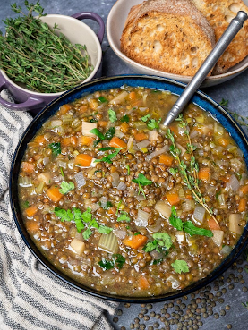

lentil soup

Description
This is a dish I found a few years ago. I was looking for a healthy, cheap, and easy dish to feed my family. And this dish is perfect for that.
These ingredients are easily found in every pantry so this is a perfect dish for all family
Ingredients
- 3 tablespoons extra–virgin olive oil
- 2 cups chopped onions
- 1 cup chopped celery stalk
- 1 cup chopped carrots
- 2 garlic cloves, chopped
- 4 cups (or more) vegetable broth
- 1 1/4 cups lentils, rinsed, drained
- 1 14 1/2–ounce can diced tomatoes in juice
Steps
- Heat oil in heavy large saucepan over medium–high heat. Add onions, celery, carrots, and garlic; sauté until vegetables begin to brown, about 15 minutes. Add 4 cups broth, lentils, and tomatoes with juice and bring to boil. Reduce heat to medium–low, cover, and simmer until lentils are tender, about 35 minutes.
- Transfer 2 cups soup (mostly solids) to blender and puree until smooth. Return puree to soup in pan; thin soup with more broth by 1/4 cupfuls, if too thick. Season with salt, pepper, and a splash of vinegar, if desired. Ladle soup into bowls. Garnish with celery leaves.